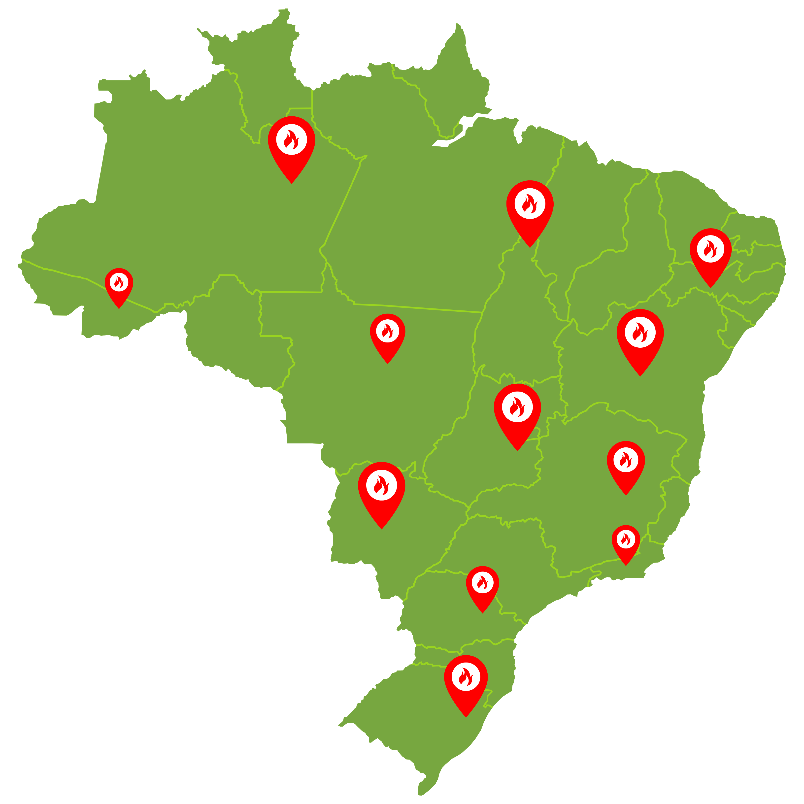

Para quem é essa plataforma?
Cidadãos conscientes
Esta plataforma é destinada a cidadãos que desejam se informar sobre os impactos das queimadas e contribuir para sua preservação.
Jovens e adultos em busca de dados e ferramentas
Permite a busca de dados atualizados, informações confiáveis e ferramentas práticas para denunciar queimadas — de forma anônima ou identificada.
Educadores, estudantes e gestores
É um recurso útil para professores, estudantes, pesquisadores e gestores públicos que necessitam de acesso a indicadores socioambientais e materiais de apoio sobre o tema.
Informação que gera ação
O objetivo é fortalecer a participação social e o combate às queimadas por meio da informação, da transparência e da ação coletiva.